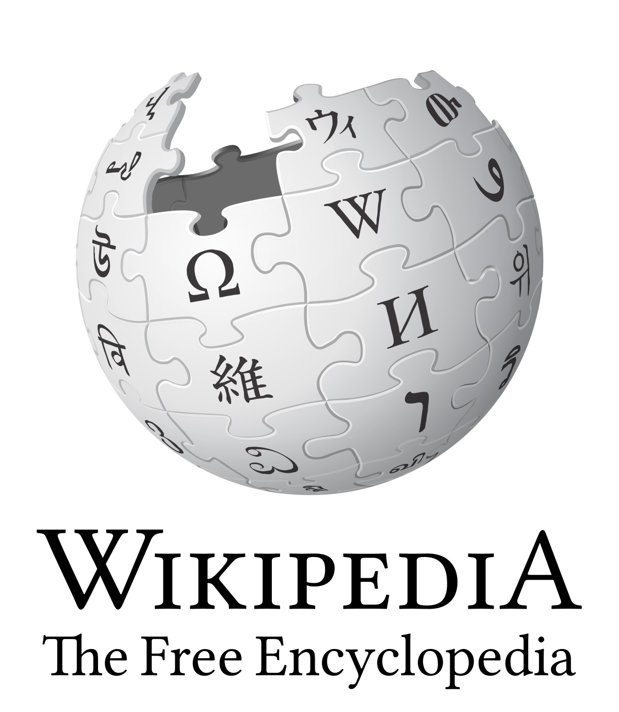

 I really enjoyed this Wikipedia assignment. I had previously thought that Wikipedia was difficult to edit, but I think I was just always looking at pages that were protected from non-experienced editors. I was definitely surprised by how simple editing was and how instantly those changes were made. I am someone who really enjoys editing, especially with minor edits such as typos and rewriting sentences. My biggest point of friction was probably when I was editing AfD discussion and the Catching Fire page, as those pages could only be edited using the source editor. It was a bit annoying trying to understand how it would be presented to the viewer and how to format the writing. It ended up being fine after I saw what other editors had done and sort of modeled my own edits after theirs. I would not say that I feel like I “know” Wikipedia, I feel like that has to come from a lot of article reading and editing experience, and maybe even writing a Wikipedia article myself. Wikipedia is a complex website, with a lot of guidelines and somewhat hidden properties that go into making it run, and I do not feel like I fully grasp the scope of it all yet. In terms of getting more editors, I honestly think that Wikipedia should advertise itself. I think seeing Wikipedia ads for editors and showing people how easy it is to make a difference in the accessibility of information for everyone on the internet would entice people to try it out for themselves. Personally, I did not realize how easy and fun it would be. If people have a subject they are super knowledgeable about and want to share with others, Wikipedia is a great place to start to get it out there. Wikipedia could also pay its more experienced editors to advertise for them and try to convince people to contribute to Wikipedia. This may be out of reach, as I know Wikipedia does not generate revenue, so I am not sure how they would get money to pay for ads. The downside to this is that social media advertising could be aimed towards a lot of different audiences: kids from middle school age all the way to adults with full time jobs. It may not be beneficial to Wikipedia to have 12 year olds editing it to add information about whatever they want, as kids may not consider the implications of posting incorrect information on Wikipedia. I think Wikipedia should be aiming to look for editors such as students in this class, English majors, those interested in writing and editing, or those who want others to learn about subjects they are passionate about. link to wiki edits